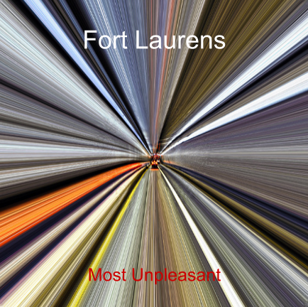

Design a Band Challenge
Challenge Information
Design thinking is when you get other people's perspective in order to better sell your products. For example, if an artist wants to sell many paintings, they would paint what's "in" in order to sell many products rather than painting something that they like themselves and sell only a few products in comparison. We are studying design thinking in order to get perspective from people so we can further improve ourselves. The steps of the DEEP design thinking are; Creativity (everyone has it, you just need to find a way to use yours) The person then, has two options, either to use their creativity for themselves or to use it for others. (we are choosing to make this for others). When you are creating for others, you must know what people want or need. In class, we each talked to three different people and asked them for their preference on fonts, art, and color. From then on, we chose pictures (for the album) based on the people's preference in color and type of art; whether it was abstract or realistic. Then, the font used for the album was also based on the preference the people had on the type of font whether it was sans serif or serif.
Band Biography
There are four high school band members; Anne (the lead singer), Richard (the drummer), Oliver (the guitarist), and finally Kate (the bass player). The four members originated from Ohio where they have grown up all their life. However, they didn't grow up knowing each other like your typical band. No, no. They passed each other a couple times in the hallways during school but never so much as waved at each other.
Until, one day, your typical social-too-happy-about-schoolgirl, Anne, decided she wanted to start a band in order to participate for this school event called ‘Bandslam’. Bandslam is an event where the best bands from high schools are chosen to compete with other high school bands and the winner gets a record deal. Anne was getting tired of seeing the same genre of bands (and same band) perform constantly at 'Bandslam' and thought she could do so much better. She gathered the best of the best she could find and with a lot of convincing, she convinced Richard (the drummer) to join by telling him that he could release his anger issues onto the drums and at the same time providing music. Kate (the bass player), however, has an ex-boyfriend in the band that she’s competing against, and therefore decided to join in order to beat him. Oliver (the guitarist) is under appreciated and with convincing (and fawning), Oliver decided to join just to prove his excellence in the band.
As time went by, the band grew closer and closer together, sharing their interests in not just music, but many other things as well converting them from strangers in a band to friends. However, no matter how hard they tried, they never came up with a title for their band until… One day, they decided to perform at a party, and although most of the people cheered for them (probably partially because they were drunk), the opposing band screamed things such as "That is the most unpleasant sound I have ever heard in my life!" However, rather than taking this negatively, an idea popped into Anne’s head. When they finished performing Anne shouted, "We are Fort Laurens, and that was our album ‘Most Unpleasant’ everyone, thank you!" The band smiled. Fort Laurens, a fort used for an attack against the enemy (British) in 1778.